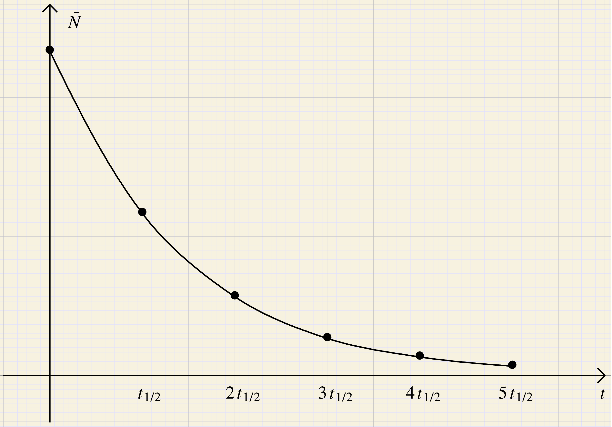

Soit un échantillon contenant des atomes radioactifs susceptibles de se désintégrer selon l'un des modes définis dans le document d'introduction.
Cette désintégration est de nature probabiliste : c'est
un phénomène aléatoire ;
à chaque instant, il y existe une certaine probabilité
pour qu'un noyau se désintègre entre deux dates
infiniment voisines et . On note cette probabilité où  est une
constante radioactive caractéristique du noyau
considéré et indépendante du temps.
est une
constante radioactive caractéristique du noyau
considéré et indépendante du temps.
Note. Pour traduire le fait que ne varie pas en fonction de l'âge des noyaux, on dit souvent, de manière imagée, que les noyaux meurent sans vieillir : pour les « jeunes », ou pour les « vieux », la probabilité de se désintégrer est identique.
Si on considère l'ensemble des noyaux radioactifs
(radionucléides) d'un échantillon, un
détecteur peut compter le nombre de particules émises (par
exemple les électrons) pendant une durée . On peut alors déterminer
expérimentalement le nombre de noyaux qui
se désintègrent pendant .
Ce nombre est, en fait, aléatoire, fluctuant autour d'une
valeur moyenne. Aussi, on ne peut pas définir avec
certitude le nombre de noyaux existant à
une date . Par contre, on
peut évaluer une valeur moyenne de  que nous noterons .
que nous noterons .
Intuitivement, on peut alors admettre qu'entre les dates et la variation du nombre moyen de noyaux est proportionnelle :
au nombre moyen de noyaux présents à la date ;
à la probabilité de désintégration entre les dates et c'est-à-dire : .
Le signe traduit la diminution du nombre de noyaux.
où , et sont des constantes.
Déterminer les expressions de ces constantes pour que soit la solution au problème étudié, en considérant qu'il existait, dans l'échantillon, noyaux à la date .
Puisque l'expression de donnée constitue une famille de solutions possibles, elle vérifie l'équation différentielle pour :
Le terme à gauche du signe égal dépend du temps alors que celui à droite est constant au cours du temps. La seule possibilité est donc que le terme de gauche soit nul, pour :
La première solution est impossible, car si , est une constante
au cours du temps ; le nombre de noyaux radioactifs reste constant
au cours du temps !
La solution est donc
Si on injecte cette solution dans l'équation (1), on obtient
La famille de solutions peut donc s'écrire :
Pour déterminer la solution au problème, il faut prendre en compte la condition initiale :
La solution au problème est donc :
L'évolution du nombre moyen de noyaux est exponentielle, une durée infinie est nécessaire pour complètement éliminer tous les noyaux radioactifs d'un échantillon.
? Que
représente-t-elle ?
est l'inverse d'un temps. C'est la
probabilité de désintégration par seconde pour
une famille de noyaux donnés.
Définition. On appelle demi-vie radioactive la durée au bout de laquelle le nombre moyen de noyaux radioactifs d'un échantillon a été divisé par 2 :
. La demi-vie radioactive dépend-elle du
temps ?
soient inverses l'une de l'autre.
Plus la probabilité de désintégration à chaque seconde est grande, plus la demi-vie est petite.
On place le point sur le graphique . On place ensuite le point
, puis le point  , puis le point
, puis le point  , etc.
, etc.
Note. La demi-vie radioactive , comme la constante radioactive , est une caractéristique de la famille de noyaux radioactifs. Celle du polonium 210 est 138 jours, tandis que celle du bismuth 210 ne dépasse pas 5 jours. La période du thorium 232 est de , alors que celle du thorium 224 ne vaut que 1,05 s. On classe habituellement les noyaux en trois catégories :
les noyaux stables ;
les noyaux dont la demi-vie radioactive est de l'ordre de grandeur de l'âge de la Terre () et qui, depuis leur formation, n'ont pas eu le temps de tous disparaître ;
les noyaux de demi-vie radioactive plus courte pour lesquels varie de quelques années à quelques microsecondes.
L'activité d'une substance radioactive, à la date , représente le nombre moyen de désintégrations par seconde
Note. L'unité de l'activité est le becquerel (symbole Bq) ; elle correspond à une désintégration par seconde.
À chaque instant, un détecteur adapté permet de mesurer le nombre moyen de particules émises par unité de temps, nombre égal au nombre de désintégrations par unité de temps. Un détecteur mesure donc l'activité de l'échantillon.
Par définition,
donc
ou
si on pose (activité de l'échantillon à la date ).
Note.
L'activité est proportionnelle au nombre moyen de noyaux susceptibles de se désintégrer à la date .
Elle est d'autant plus grande que la constante radioactive est grande, c'est à dire que la demi-vie
radioactive est petite.
Elle décroit très rapidement en début d'émission et voit sa variation diminuer au cours du temps.
La mesure de l'activité à deux dates
différentes permet de déterminer
puis d'en déduire .
On trace généralement .
L'évolution de la variation de l'activité au cours du temps s'obtient en étudiant la dérivée de la grandeur par rapport au temps :
En valeur absolue, on obtient :
La vitesse de décroissance de l'activité est donc bien maximale pour et diminue ensuite au cours du temps.
?
L'évolution de est affine. est la valeur absolue de la pente de la droite, ce qui
n'est pas difficile à déterminer
expérimentalement, une fois la droite tracée.